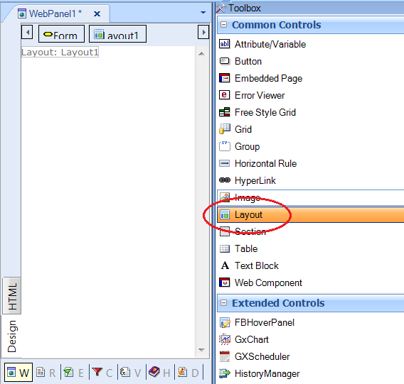

The layout control allows inserting an abstract layout into an HTML form. The abstract layout is edited using the Web Abstract Editor and its main purpose is to help in the design of a Responsive Web Application. The layout control is available in the toolbox when the web form is HTML. When dragging the layout control to the form, the web form is composed of an HTML form and nested into it; the abstract layout can be edited using the Web Abstract Editor. It gives the designer the possibility of using the Web Abstract Editor in a HTML form, in order to obtain the advantages of both. Layout control propertiesThe Layout control can be dragged to the HTML form, as shown in the figure below: 
|
| Backlinks | |
| Abstract layout | Add Html as Root Form |